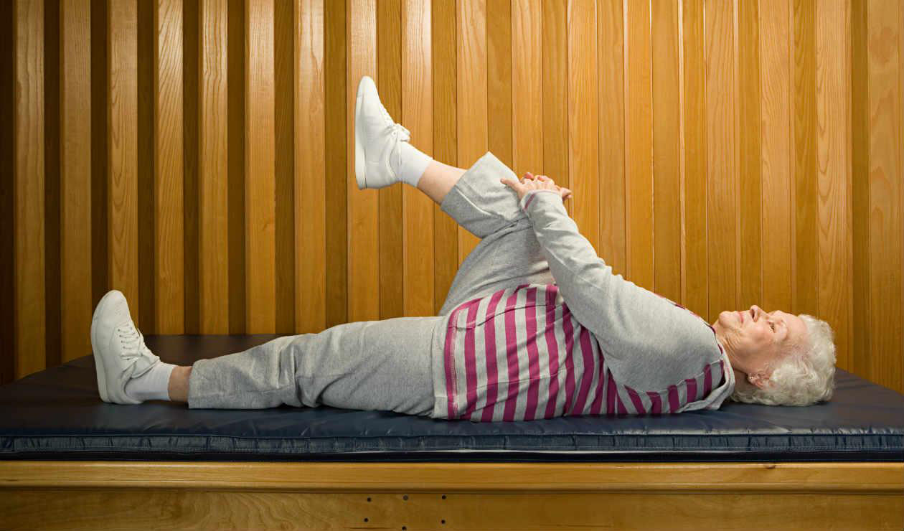
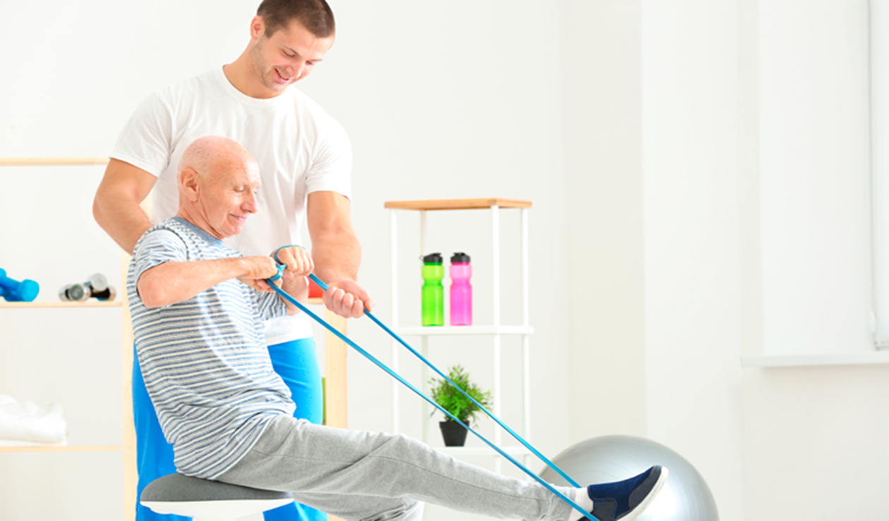
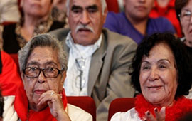
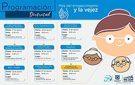

...

Con juegos de mesa podras divertirte y compartir con los demás, pasar un rato agradable y ejercer habilidades de memoria y lógica
Haciendo manualidades logramos tener un espacio de distracción que ayuda a expresar sentimientos y mejorar las habilidades motoras
Con el baile y la danza ayudamos a mejorar la postura, hacer ejercicio cardiovascular, mejorar el ánimo y compartir con los demás
Con las caminatas diarias, fortalecemos nuestro cuerpo, disfrutamos del aire libre y también ayudamos a prevenr diferentes enfermedades
Carolina Jimenez
Fisioterapeuta
Armando Perez
Especializado en
Recreación y Deporte
Juan Ortiz
Especializado en
Discapacidad y Educación
Fisica
Geraldine Cifuentes
Medico General
La Cinemateca de Bogotá invita a todos los adultos mayores, a asistir un miércoles del mes, con entrada libre, a la proyección de una película internacional. Los adultos mayores de Bogotá encontrarán en la Cinemateca películas clásicas y recientes de la cartelera internacional
En agosto se celebra el mes de la Vejez, por eso la ciudad tiene preparadas muchas actividades para reconocer y dignificar a las personas mayores de la ciudad. Celebremos la vejez, esta es una oportunidad para abrazar a nuestros mayores. Bajo el lema ‘Envejece Conmigo’

Aquí puedes encontrar un canal de denuncia, en el que podrás reportar cualquier incidente de sospecha
o abuso en contra de los adultos mayores, llena el formulario y nos contactaremos contigo.
Nuestros cumpleañeros del mes, celebraran su fiesta en el salón principal, el último día del mes, a partir de las 2 pm, estan todos sus familiares invitados.